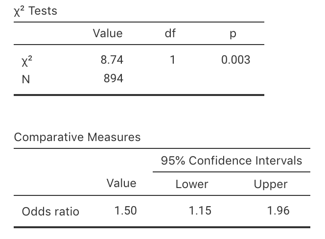
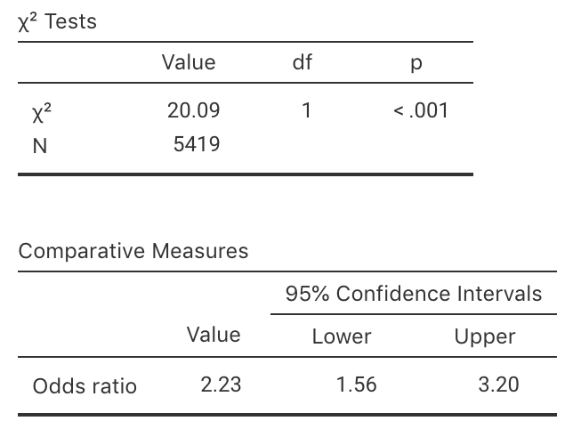

10.6 Optional questions
These questions are optional; e.g., if you need more practice, or you are studying for the exam. (Answers appear in Sect. A.10.)
10.6.1 (Optional) Odds and odds ratio
The use of genetically modified (GM) foods is controversial. Luo et al. (2004) decided to study:
...whether income level and attitude to genetic engineering of food are dependent.
To answer this relational RQ, the researchers asked 894 Australians about their income (low or high), and their attitude to GM foods (for or against).
- The data collected are given in Table 10.5. Compute the odds that, among high-income earners, someone is in favour of GM foods.
- Compute the odds that, among low-income earners, someone is in favour of GM foods.
Interpret what this means. - The odds of a high-income earner being in favour of GM foods is how many times more than a low-income earner being in favour of GM food? This value is called the odds ratio.
- For these data, the output is shown in Fig. 10.4 (from jamovi). Write down the confidence interval for the odds ratio, and interpret what this means.
- Conduct a hypothesis test to determine if there is evidence of a difference between high and low income earners.
- A politician stated that 'any attempt to suggest that the acceptance of GM foods is related to income are clearly bogus'. Do you agree or disagree?
| High income | Low income | |
|---|---|---|
| For GM foods | 263 | 258 |
| Against GM foods | 151 | 222 |

FIGURE 10.4: jamovi output for the GM foods data.
10.6.2 (Optional) Two-way tables
Applying tattoos carries health risks as the skin is broken during application. Haley and Fischer (2001) examined if a relationship existed between having hepatitis C and having tattoos.
To study this, \(626\) people were interviewed as part of an observational study, and asked about two issues:
- Whether they had hepatitis C (\(47\) people) or not (\(579\) people); and
- Whether they had a tattoo (\(113\) people), or not (\(513\) people).
Which one of these five sets of hypotheses is not valid for this situation? Why?
- \(H_0\): No association between having hepatitis C and having a tattoo in the population;
\(H_1\): An association between having hepatitis C and having a tattoo in the population. - \(H_0\): The odds of having hepatitis C is the same with or without a tattoo in the population;
\(H_1\): The odds of having hepatitis C is not the same with or without a tattoo in the population. - \(H_0\): The mean number of people having hepatitis C is the same for those with and without a tattoo in the population;
\(H_1\): The mean number of people having hepatitis C is not the same for those with and without a tattoo in the population. - \(H_0\): The odds ratio of having hepatitis C, comparing those with or without a tattoo, is one in the population;
\(H_1\): The odds ratio of having hepatitis C, comparing those with or without a tattoo, is not one in the population. - \(H_0\): The proportion having hepatitis C is the same with or without a tattoo in the population;
\(H_1\): The proportion having hepatitis C is not the same with or without a tattoo in the population.
- \(H_0\): No association between having hepatitis C and having a tattoo in the population;
Compute the percentage of people overall in the sample with a tattoo.
Assuming the null hypothesis about the population is true, compute the number of people in the sample with hepatitis C that you would expect have a tattoo. Use the information above to answer the question.
In the sample, \(25\) people had Hep. C and a tattoo. Use this information to create the two-way table summarising the data (Table 10.6).
| Had Hep. C | Did not have Hep. C | Total | |
|---|---|---|---|
| Had tattoo | |||
| Did not have tattoo | |||
| Total |
- In the sample, what are the odds that someone has Hep. C, among those with a tattoo?
- In the sample, what are the odds that someone has Hep. C, among those without a tattoo?
- From the sample information, compute the odds ratio of having Hep. C, comparing students with a tattoo to those without a tattoo. Carefully explain what this value means.
10.6.3 (Optional) CIs and tests for ORs
Higgins and Koch (1977) studied byssinosis (a respiratory complaint) among workers in the textile industry. The researchers were interested, among other things, in exploring the relationship between smoking status and the presence of byssinosis.
More specifically, they wanted to see if the proportion of smokers with byssinosis was greater than the proportion of non-smokers with byssinosis, among all textile workers.
The researchers used an observational study.
Which one of these is correct as a null hypothesis? Why are the others incorrect?
- The odds of having byssinosis is the same in the sample of smokers and the sample of non-smokers.
- The mean number of workers having byssinosis is the same for smokers and non-smokers.
- The population odds of having byssinosis is the same in among smokers and non-smokers.
Among those randomly selected to appear in the study, \(165\) workers had byssinosis (\(40\) were non-smokers) and \(5\,254\) did not (\(2\,190\) were non-smokers).
Construct the two-way table showing the number of workers with byssinosis among smokers and non-smokers.
Compute the sample proportion of workers with byssinosis, among smokers. Then, compute the sample proportion of workers with byssinosis, among non-smokers.
Compute the odds of having byssinosis, among smokers. Then compute the odds of having byssinosis, among non-smokers. What do these odds mean?
Compute the odds ratio comparing smokers to non-smokers. What does this odds ratio mean?
A report states that the odds ratio is not one simply due to sampling variation, and not due to smoking.
Do you agree or disagree? Why?Use the software output in Fig. 10.5 to test the hypotheses. Write a proper conclusion to communicate the results.
Are the results likely to be statistically valid? Explain.

FIGURE 10.5: Output from jamovi for the byssinosis example.